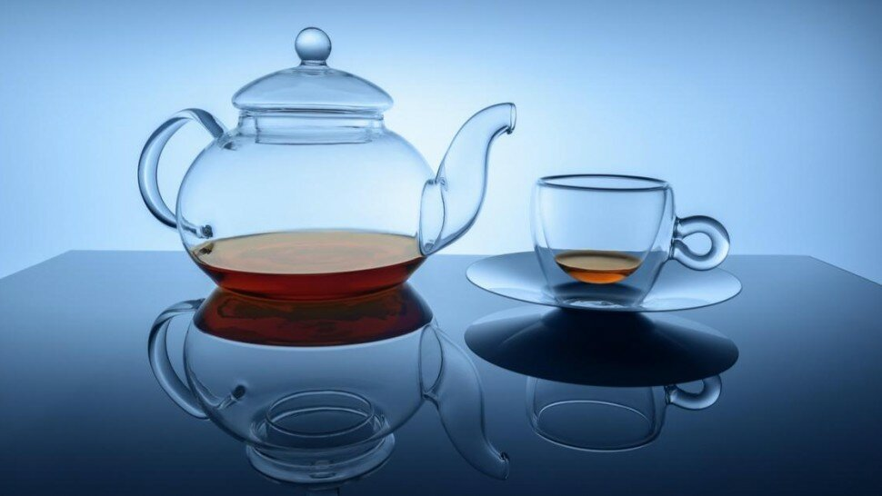
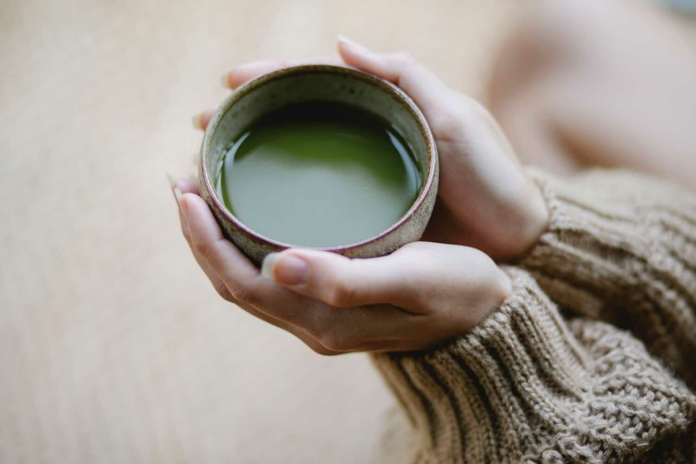

Thé : bienfaits et méfaits pour la santé

En plus de l'eau ordinaire, le thé est la boisson la plus populaire au monde, avec le café. Du moine bouddhiste au salarié d'entreprise, le thé n'a pas de frontière. En effet, plus de deux milliards de tasses sont consommées chaque jour sur la planète, en Asie, en Afrique du Sud, ou en Europe, et l'augmentation de la demande reste croissante. Depuis des milliers d'années que le théier (Camellia sinensis ou C. sinensis) a été cultivé pour la première fois en Chine, les gens ont bu une infusion de ses feuilles pour de nombreuses raisons comme la stimulation, la relaxation et les effets thérapeutiques associés (médecines douces).
En dépit de l'omniprésence du thé dans les sociétés anciennes et modernes, l'histoire de la domestication du théier n'est pas tout à fait précise et fait l'objet régulier de découvertes. De la sorte, grâce au séquençage moderne du génome de C. sinensis, les études des chercheurs sur l'évolution domestique du thé prennent de nouvelles perspectives. Effectivement, les informations génétiques, combinées aux preuves des textes historiques et de l'archéologie, pourraient conduire à des plantes plus résistantes et de meilleure qualité.
Cependant, les producteurs de thé (thé de Ceylan ou Sri Lanka, thé japonais, contreforts de l'Himalaya, provinces de Fujian, thé d'Assam, etc.), doivent faire face à des conditions environnementales changeantes. Ce changement climatique mondial important modifie les températures et les précipitations, ce qui, à son tour, affecte toute la chaîne de production des thés. En plus de modifier le lieu et la façon dont les thés poussent, leurs saveurs (qualité gustative) et leurs effets potentiels sur la santé évoluent et se transforment.
Pendant ce temps, des scientifiques du monde entier modifient l'ADN du théier pour améliorer la production, le rendement et adapter les composants d'une tasse de thé. Ainsi, la recherche commence à étayer ce qui était considéré par le passé comme la seule sagesse populaire sur les bienfaits du thé pour la santé, en particulier en ce qui concerne le potentiel du thé pour prévenir le cancer, stimuler l'humeur et optimiser les performances cognitives. Par conséquent, les nanomatériaux fabriqués à partir de composés dérivés du thé pourraient aider l'imagerie médicale. Quoique la science du thé progresse rapidement, des failles dans sa culture de recherche pourraient mettre en péril les progrès, et les chercheurs (phytogénéticien, etc.) qui étudient le thé, espèrent que les principaux pays producteurs de thé au monde ouvrent leurs données afin que de nouvelles idées puissent prendre racine. Le thé a beau être populaire depuis des millénaires, il cache encore un potentiel énorme autant pour une utilisation classique dans le cadre de l'alimentation (thé biologique,...) que sur le plan de la santé et du bien-être.

Sommaire
- Introduction
- Comment le thé est arrivé en Angleterre et en Europe ?
- Quel est le meilleur thé pour la santé ?
- Est-il bon de boire du thé tous les jours ?
- Boire du thé trop chaud provoque le cancer - Vidéo
- Boire beaucoup de thé vert : quels dangers en cas de sur-consommation ?
- Température et temps d'infusion affectent les antioxydants
- Quel thé choisir et comment faire un thé glacé ? - Palais des thés - Vidéo
- Quels sont les tanins du thé et leurs vertus ?
- Les multiples bienfaits du matcha - Vidéo
- Quels sont les bienfaits du thé vert ?
- Nagi Kumar : catéchines du thé vert pour la prévention du cancer de la prostate - Vidéo
- Aide à la prévention du cancer
- Recommandations
- Quels sont les bienfaits du thé blanc ?
- Les buveurs de thé vivent plus longtemps
- Boire du thé réduit le risque de glaucome
- A propos des thés aromatisés, en poudre et post-fermentés
- Quelques alternatives aux thés classiques
- Les bienfaits des flavonoïdes du thé contre la maladie de Parkinson
- Où acheter du thé ?
- Les changements climatiques affectent les thés
- Sources

Encensé par certains, alternative au café [1] pour d’autres, le thé est une boisson indissociable de l’histoire de nombreux peuples.
Quel est le meilleur thé pour la santé ?
Quels sont les bienfaits du thé vert ?

Lors de son élaboration, le thé vert bénéficie d’une technique de transformation qui ne provoque pas ou peu d’oxydation. Ceci en fait le thé privilégié pour profiter au maximum des vertus de cette plante.
Le thé vert regorge d'antioxydants bons pour la santé qui peuvent vous garder en forme à long terme. Il est notamment un moyen pour aider à améliorer la fonction cérébrale, favoriser l’absorption des graisses ou à lutter contre certaines maladies.
Les polyphénols présents dans le thé vert réduisent non seulement le risque de maladie cardiovasculaire en abaissant le cholestérol HDL (« bon cholestérol ») et LDL (« mauvais cholestérol »), mais peuvent également réduire le risque de cancer.
Ainsi, le thé vert est considéré comme l'une des boissons les plus saines de la planète, puisqu’il est plus qu'une simple boisson hydratante grâce à sa teneur en polyphénols.

Le thé vert a des effets anti-anxiété
Le thé vert contient une gamme de composés sains. Riche en polyphénols, le thé vert contient une catéchine appelée épigallocatéchine-3-gallate ou EGCG. Les catéchines sont des antioxydants naturels qui aident à prévenir les dommages cellulaires et offrent d'autres avantages régulièrement confirmés par la recherche.
Effectivement, ces substances peuvent réduire la formation de radicaux libres [9] dans le corps, protégeant les cellules et les molécules des dommages.
Ces radicaux libres jouent un rôle dans le vieillissement et de nombreux types de maladies. Soulignons également que le thé vert contient de petites quantités de minéraux qui peuvent être bénéfiques pour la santé.
D’autre part, l’ingrédient actif clé et stimulant dans le thé est la caféine. Cependant, il n’en contient pas autant que le café, mais assez pour produire une réponse positive sans provoquer un effet « booster » et de nervosité - qui sont généralement associés à une consommation excessive de caféine. La caféine affecte le cerveau en bloquant un neurotransmetteur inhibiteur appelé « adénosine ». De la sorte, il augmente le déclenchement des neurones et la concentration de neurotransmetteurs comme la dopamine et la noradrénaline.
Néanmoins, la caféine n’est pas le seul composé stimulant du thé vert. Il contient également un acide aminé, le « L-théanine », qui peut traverser la barrière hémato-encéphalique [10]. La L-théanine augmente la dopamine et la production d'ondes alpha dans le cerveau et l'activité du neurotransmetteur inhibiteur GABA [11], qui a des effets anti-anxiété.
La synergie de la caféine et de la L-théanine peut donc avoir des effets particulièrement puissants sur l'amélioration des fonctions cérébrales.
Notons que les effets du thé vert sur le cerveau participent aussi à protéger le cerveau contre le vieillissement, et les maladies neurodégénératives comme la maladie d'Alzheimer et la maladie de Parkinson.
Quels sont les bienfaits du thé blanc ?
Les buveurs de thé vivent plus longtemps
Boire du thé réduit le risque de glaucome
A propos des thés aromatisés, en poudre et post-fermentés
Quelques alternatives aux thés classiques
Les bienfaits des flavonoïdes du thé contre la maladie de Parkinson
Sources
- Café : bienfaits et méfaits sur la santé, https://www.le-guide-sante.org/actualites/nutrition/cafe-bienfaits-mefaits-sante-nutrition
- Médecine douce : le guide des médecines douces, https://www.le-guide-sante.org/actualites/forme-et-bien-etre/medecines-douces-guide-recommandations
- Les aliments anti-cancer, https://www.le-guide-sante.org/actualites/nutrition/aliments-anti-cancer-regime-conseils
- Draft genome sequence of Camellia sinensis var. sinensis provides insights into the evolution of the tea genome and tea quality. Proceedings of the National Academy of Sciences May 2018, 115 (18) E4151-E4158; DOI: 10.1073/pnas.1719622115, https://www.pnas.org/
- 13 raisons de boire du thé vert matcha japonais, https://blognutritionsante.com/
- Morgan S, Koren G, Bozzo P. Is caffeine consumption safe during pregnancy?. Can Fam Physician. 2013;59(4):361-362. https://www.ncbi.nlm.nih.gov/
- A prospective study of tea drinking temperature and risk of esophageal squamous cell carcinoma. International Journal of Cancer, 2019; DOI: 10.1002/ijc.32220, https://onlinelibrary.wiley.com/
- Temperature and Time of Steeping Affect the Antioxidant Properties of White, Green, and Black Tea Infusions. Journal of Food Science, 2015; DOI: 10.1111/1750-3841.13149, https://onlinelibrary.wiley.com/doi/abs/
- Molecular understanding of Epigallocatechin gallate (EGCG) in cardiovascular and metabolic diseases. J Ethnopharmacol. 2018 Jan 10;210:296-310. doi: 10.1016/j.jep.2017.08.035. Epub 2017 Aug 31. PMID: 28864169. https://pubmed.ncbi.nlm.nih.gov/
- L-theanine, a natural constituent in tea, and its effect on mental state. Asia Pac J Clin Nutr 2008;17 (S1):167-168, PDF, http://apjcn.nhri.org.tw/server/
- Les neurotransmetteurs de l’anxiété, https://lecerveau.mcgill.ca/
- Green tea consumption and breast cancer risk or recurrence: a meta-analysis, https://pubmed.ncbi.nlm.nih.gov/
- A Green Tea Extract High in Catechins Reduces Body Fat and Cardiovascular Risks in Humans, https://onlinelibrary.wiley.com/
- Diabète, https://www.who.int/fr/news-room/
- The relationship between green tea and total caffeine intake and risk for self-reported type 2 diabetes among Japanese adults, https://pubmed.ncbi.nlm.nih.gov/16618952/
- À propos des maladies cardiovasculaires, https://www.who.int/
- Green and black tea for the primary prevention of cardiovascular disease, https://www.cochranelibrary.com/
- Iron deficiency anemia due to excessive green tea drinking, https://www.ncbi.nlm.nih.gov/
- Epigallocatechin-3-Gallate Inhibition of Myeloperoxidase and Its Counter-Regulation by Dietary Iron and Lipocalin 2 in Murine Model of Gut Inflammation. The American Journal of Pathology, 2016; DOI: 10.1016/j.ajpath.2015.12.004, https://ajp.amjpathol.org/
- Antioxidative properties of black tea, https://www.sciencedirect.com/
- Que choisir ? Thé vert en bouteille, sachet ou vrac ?, https://blognutritionsante.com/
- Habitual tea drinking modulates brain efficiency: evidence from brain connectivity evaluation. Aging, 2019; 11 (11): 3876 DOI: 10.18632/aging.102023, https://www.aging-us.com/
- Tea consumption and the risk of atherosclerotic cardiovascular disease and all-cause mortality: The China-PAR project. European Journal of Preventive Cardiology, 2020; 204748731989468 DOI: 10.1177/2047487319894685, https://journals.sagepub.com/
- Frequency of a diagnosis of glaucoma in individuals who consume coffee, tea and/or soft drinks. British Journal of Ophthalmology, 2017; DOI: 10.1136/bjophthalmol-2017-310924, https://bjo.bmj.com/
- Glaucome, https://www.who.int/
- Acute Ingestion of Caffeinated Chewing Gum Improves Repeated Sprint Performance of Team Sports Athletes With Low Habitual Caffeine Consumption. International Journal of Sport Nutrition and Exercise Metabolism, 2017; 1 DOI: 10.1123/ijsnem.2017-0217, https://journals.humankinetics.com/
- Borhani Haghighi A, Motazedian S, Rezaii R, Mohammadi F, Salarian L, Pourmokhtari M, Khodaei S, Vossoughi M, Miri R. Cutaneous application of menthol 10% solution as an abortive treatment of migraine without aura: a randomised, double-blind, placebo-controlled, crossed-over study. Int J Clin Pract. 2010 Mar;64(4):451-6. doi: 10.1111/j.1742-1241.2009.02215.x. PMID: 20456191. https://pubmed.ncbi.nlm.nih.gov/
- Protéines et acides aminés : que faut-il savoir ?, https://www.le-guide-sante.org/actualites/nutrition/proteines-acides-amines-que-faut-il-savoir
- Weiss DJ, Anderton CR. Determination of catechins in matcha green tea by micellar electrokinetic chromatography. J Chromatogr A. 2003 Sep 5;1011(1-2):173-80. doi: 10.1016/s0021-9673(03)01133-6. PMID: 14518774. https://www.sciencedirect.com/
- Les lipides et acides gras : le guide, https://www.le-guide-sante.org/actualites/nutrition/lipides-acides-gras-macronutriments-apport-energetique
- Sous-estimation de la mortalité des personnes en surpoids, https://www.le-guide-sante.org/actualites/nutrition/sous-estimation-mortalite-surpoids-imc
- Obésité et diabète de type 2 : comment éviter la survenue du diabète d’âge mur ? https://www.le-guide-sante.org/actualites/medecine/obesite-diabete-type-2
- Jasmin Sambac. Définition. https://fr.wikipedia.org/
- Les aliments anti-cancer : régime et conseils, https://www.le-guide-sante.org/actualites/nutrition/aliments-anti-cancer-regime-conseils
- Les glucides : que faut-il savoir ?, https://www.le-guide-sante.org/actualites/nutrition/glucides-macronutriments-nutrition
- Golozar A, Fagundes RB, Etemadi A, et al. Significant variation in the concentration of carcinogenic polycyclic aromatic hydrocarbons in yerba maté samples by brand, batch, and processing method. Environ Sci Technol. 2012;46(24):13488-13493. doi:10.1021/es303494s, https://www.ncbi.nlm.nih.gov/
- Intake of Flavonoids and Flavonoid-Rich Foods, and Mortality Risk Among Individuals With Parkinson Disease: A Prospective Cohort Study
Xinyuan Zhang, Samantha A. Molsberry, Tian-Shin Yeh, Aedin Cassidy, Michael A. Schwarzschild, Alberto Ascherio, Xiang Gao
Neurology Jan 2022, 10.1212/WNL.0000000000013275; DOI: 10.1212/WNL.0000000000013275. https://n.neurology.org/ - Douleur chronique et neuroinflammation. Revue du Rhumatisme. Volume 88, Issue 6, December 2021, Pages 417-423. https://www.sciencedirect.com/